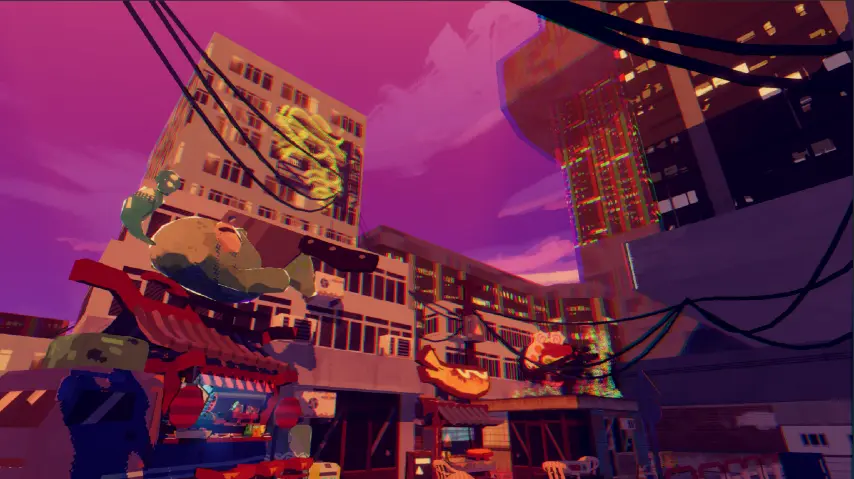

About the project
This was a Unity project for an RMIT University elective. This project focused on 3D modeling and shader work to create a comic-book style environment. The environment centers upon a sushi truck operated by a robotic chef that comedically is controlled by a fish.

BLENDER
UNITY
3D Modeling
CONCEPT ART
ILLUSTRATION
TECH ART